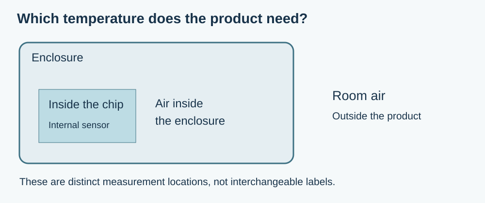
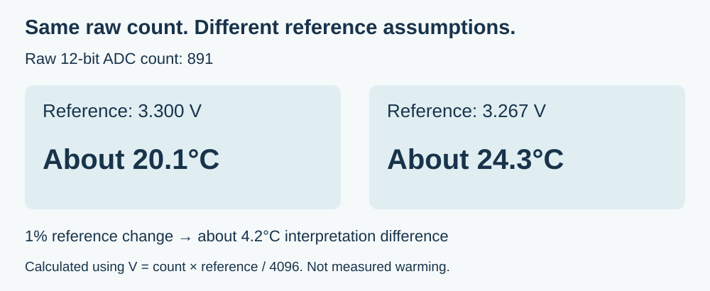

Your prototype can display a temperature without adding a sensor module. That is useful for learning how to read, display and record a value. Before calling the result “room temperature,” however, check what the sensor is physically measuring. An internal microcontroller sensor measures conditions inside the chip, which may differ from the air around the finished product.
For a team building a desktop display, classroom device or environmental indicator, this is a product-definition question. Are you trying to show room conditions, observe the electronics warming up, or simply demonstrate a data display? Those goals require different evidence even if the screen shows the same unit, degrees Celsius.
A September 7, 2023 Arduino Forum question captures the confusion directly. The author expected the Pico's onboard reading to report room temperature and then asked how to smooth unstable values. Replies distinguished chip temperature from room temperature. The thread did not establish a calibrated room sensor or a complete explanation of every reported error; it shows why choosing the measurement comes before polishing its display.

What the chip sensor actually converts
On the RP2040, a temperature-sensitive junction is connected to ADC channel 4. The ADC turns a voltage into a number. Software then estimates temperature using the typical relationship documented in the RP2040 datasheet, section 4.9.5:
T = 27 - (V - 0.706) / 0.001721
Here, V is the sensor voltage in volts and T is the estimated temperature in Celsius. The equation's constants are typical values; the datasheet notes variation between devices and over temperature, and the possible need for calibration.
Two questions therefore remain separate: whether the conversion estimates chip temperature adequately, and whether chip temperature answers the user's question. Improving the first does not automatically establish the second. If a display is meant to describe the room, the team still needs a measurement arrangement representative of room air.
A small voltage assumption can move the answer
The result is also sensitive to the ADC reference voltage—the electrical value used as the ruler for converting an ADC count into volts. If the conversion assumes the wrong ruler, adding more decimal places does not make the resulting temperature more accurate.
Using the datasheet's example, a raw 12-bit count of 891 converts to approximately 20.1°C with a 3.300 V reference and 24.3°C with a 3.267 V reference. Those are two interpretations of the same count under different reference assumptions. They are not two measured temperatures, and they do not show that a particular prototype warmed by 4.2°C.

An average can make random variation easier to read, but it cannot by itself correct the wrong reference assumption or move the sensor out of the chip. Likewise, subtracting a room-temperature offset once does not demonstrate that the result remains valid when the electronics' workload, power arrangement or enclosure changes.
For a chip-temperature estimate, investigate the reference and calibration requirements of the actual board. For a room-temperature function, first choose a suitable sensor location and measurement method. A more stable reference may improve the electrical conversion; it does not make those two product requirements equivalent.
Compare the proposed measurement with the real use
For an environmental display, write down the allowable difference from a suitable reference instrument and how quickly the reading should respond. These requirements should come from what users need to decide. A decorative demonstration and a device intended to support a consequential decision should not inherit the same acceptance criteria merely because they use similar code.
Then compare readings in the intended enclosure after conditions have had time to settle. Keep the reference instrument near the location you actually want to measure, and record the placement. If the chip sensor is being evaluated, also record what the electronics are doing. A comparison made with the enclosure open and the processor mostly idle does not cover every assembled operating state.
Repeat the comparison across the conditions that matter to the product. For example, compare the display off and on, or the intended quiet and busy modes, while recording room conditions. These are proposed checks, not experiments performed for this article. Their purpose is to find out whether the number follows the desired quantity closely enough for the intended use.
Keep the useful part of the demonstration
The internal sensor is still a useful way to exercise a reading-to-display or reading-to-file path without an external probe. Label that demonstration honestly, and keep the raw readings and conversion assumptions available while developing it. A functioning data path is real progress even when the measurement has not yet been qualified for a customer-facing claim.
If the product needs room temperature, move forward with a sensor and placement chosen for that job, then validate the assembled result. If it needs insight into the electronics' temperature, qualify the internal reading for that purpose. Neither choice should be based solely on whether an example program produces a plausible-looking number.
If you are turning a sensor demonstration into a product people will rely on, discuss the measurement requirement with Anvol. Bring the intended use, enclosure arrangement and any comparison readings. That makes the next step about measuring the right thing, rather than simply making the displayed number look steadier.
Both diagrams above are new explanations; the numerical example is a calculation, not measured performance. This article does not claim a temperature accuracy or a validated room-sensing design. Sources checked October 10, 2026.